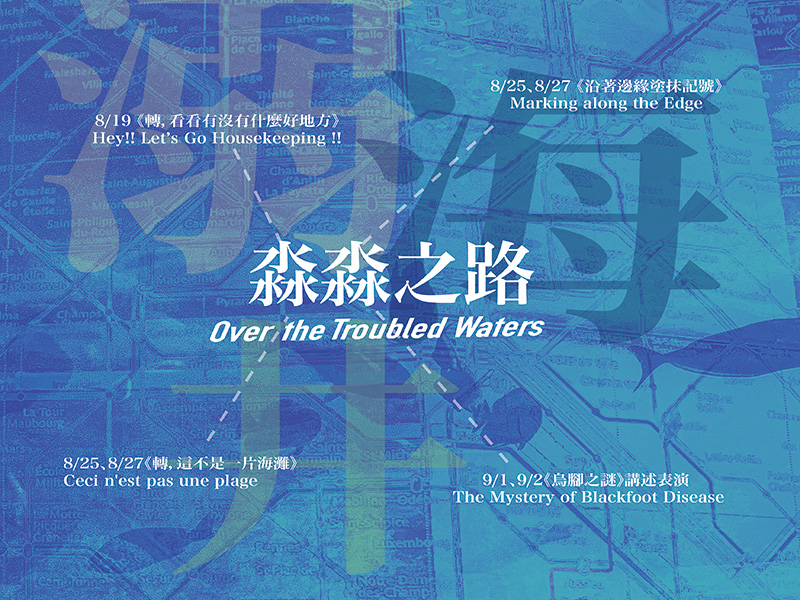
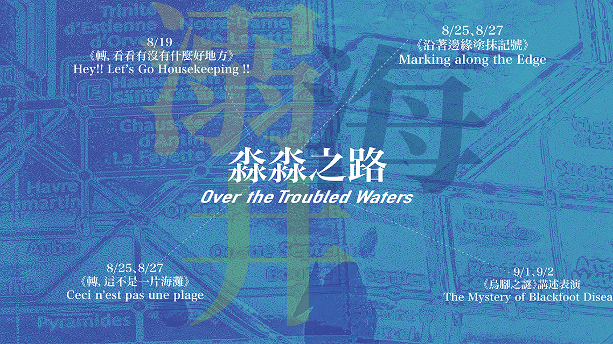

淼淼之路
海水《沿著邊緣塗抹記號》身體郊遊版
＃海水－這是一趟跨海的列車之旅，跨過後疫情下的身體迷失。Baï LEE以曾任巴黎記者、街拍攝影師、國師旅遊節目企劃，旅法六年各種斜槓為了做創作的荒繆人生，帶明潔到巴黎舊地重遊，兩人透過聲音與身體姿態記錄、呈現藝術幻象與現實衝突所交疊出的「流動饗宴」。
演出時間：8/25 (Fri) 15:30、8/27 (Sun) 15:30
新北投車站（臺北市北投區七星街1號）
演出長度：40分鐘
＊此為移動式演出，觀眾請自行攜帶耳機連接語音導覽裝置。
Credits
策展/製作：明白實驗所
概念/文本/演出：李明潔、李欣穎Baï LEE
視覺設計：李欣穎Baï LEE
聲音設計：陳臨霜

淼淼之路
人生就像游泳，創作也是，有時大口呼吸、有時從容感受、有時喘不過去，唯一不變的是－好好換氣、保持前進。
2023台北藝穗節《明白實驗所》自主策展兼展演呈現四檔有關水的故事。

* 限量明白實驗所策展《淼淼之路》四場節目套票1999元，一起陪我們久久久。
-
2023.AUG
Sat19
14:00 | 18:00
淼淼之路 ― 溺水《轉，看看有沒有什麼好地方》鬧房間（臺北市中正區延平南路58號4樓）
-
2023.AUGFri2515:30淼淼之路 ― 海水《沿著邊緣塗抹記號》身體郊遊版
新北投車站（臺北市北投區七星街1號）
-
2023.AUGFri2520:00淼淼之路 ― 水水《轉，這不是一片海灘》
新北投車站（臺北市北投區七星街1號）
-
2023.AUGSun2715:30淼淼之路 ― 海水《沿著邊緣塗抹記號》身體郊遊版
新北投車站（臺北市北投區七星街1號）
-
2023.AUGSun2720:00淼淼之路 ― 水水《轉，這不是一片海灘》
新北投車站（臺北市北投區七星街1號）
-
2023.SEPFri 114:30 | 18:00淼淼之路 ― 井水《烏腳之謎》講述表演
紀州庵文學森林-古蹟「大廣間」( 臺北市中正區同安街 107 號)
-
2023.SEPSat 214:00淼淼之路 ― 井水《烏腳之謎》講述表演
紀州庵文學森林-古蹟「大廣間」( 臺北市中正區同安街 107 號)